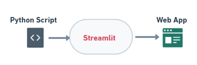

Streamlit Digital Book 📗 ¶
1. Objective ¶
Python(🐍) script to web(🕸) Application. 
2. Introduction ¶
This book contains the details of the python package called streamlit which is used to build webapplication or dataapplications in less time and its concepts, Visit streamlit for more details.
Tip
 Refer the link streamlit
Refer the link streamlit
- What is streamlit?
- How to install?
- Streamlit Concepts
- Sample examples
- ML Applications
3. Concepts ¶
- Title, input, text input, image, video, sidebar, markdown, latex, examples, MLapps ..etc